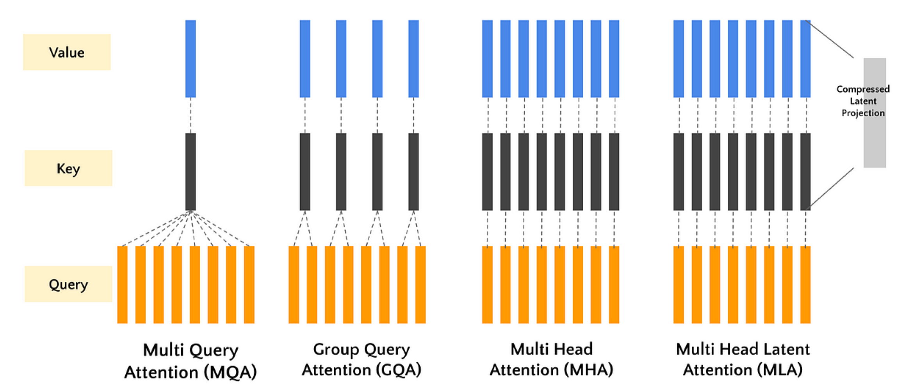
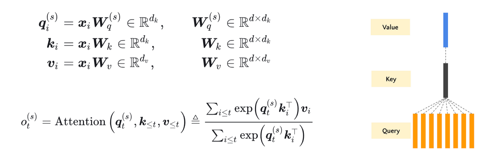
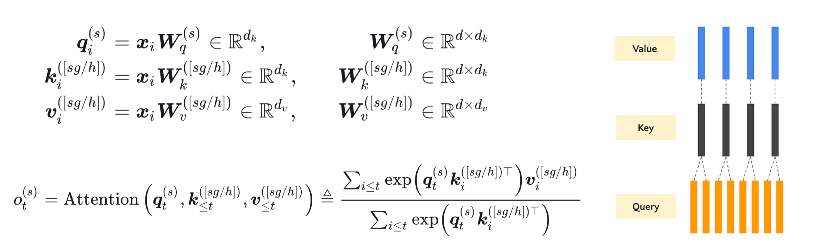
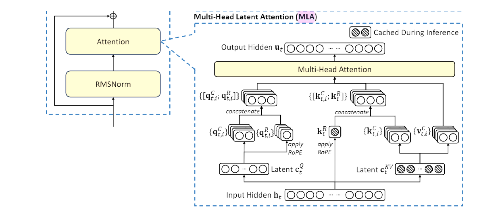

深入注意力机制 MHA、MQA、GQA、MLA(DONE)#
本实验将从头实现标准的多头注意力（MHA），并在此基础上，逐步实现其三种重要的变体：MQA、GQA 和 MLA。通过对比它们的代码差异和性能指标，我们将深入理解它们的设计动机和优劣。
基础缩放点积注意力：所有注意力机制的基础组件
多头注意力（MHA）：经典的多头设计，每个头有独立的 Q、K、V 投影
多查询注意力（MQA）：所有头共享 K 和 V 投影，提高效率
分组查询注意力（GQA）：MHA 和 MQA 的折中方案，头分组共享 K 和 V
多潜在注意力（MLA）：使用可学习的潜在向量作为 K 和 V，与序列长度无关

1. 注意力机制基础#
1.1 Scaled Dot-Product Attention#
核心的注意力计算机制，由 《Attention Is All You Need》 提出。其目的是通过查询向量（Query）与键向量（Key）的相似度，来加权求和值向量（Value）。
公式如下：
其中：
\(Q\): 查询矩阵，形状为
(seq_len, d_k)或(batch_size, seq_len, d_k)\(K\): 键矩阵，形状为
(seq_len, d_k)或(batch_size, seq_len, d_k)\(V\): 值矩阵，形状为
(seq_len, d_v)或(batch_size, seq_len, d_v)\(d_k\): 键向量的维度，缩放因子 \(\sqrt{d_k}\) 用于防止点积结果过大导致梯度消失。
让我们先实现这个核心函数。
import torch
import torch.nn as nn
import torch.nn.functional as F
import math
def scaled_dot_product_attention(query, key, value, mask=None):
"""
计算缩放点积注意力。
Args:
query: 查询张量，形状 (..., seq_len_q, d_k)
key: 键张量，形状 (..., seq_len_k, d_k)
value: 值张量，形状 (..., seq_len_v, d_v)
mask: 可选的掩码张量，形状 (..., seq_len_q, seq_len_k)
Returns:
输出张量，形状 (..., seq_len_q, d_v)
注意力权重张量，形状 (..., seq_len_q, seq_len_k)
"""
# 1. 计算 Q 和 K 的转置的点积
matmul_qk = torch.matmul(query, key.transpose(-2, -1)) # (..., seq_len_q, seq_len_k)
# 2. 缩放：除以 sqrt(d_k)
d_k = query.size(-1)
scaled_attention_logits = matmul_qk / math.sqrt(d_k)
# 3. 可选：应用掩码（在解码器中用于掩盖未来位置）
if mask is not None:
# 将掩码中为 0 的位置置为一个非常大的负数，softmax 后概率为 0
scaled_attention_logits += (mask * -1e9)
# 4. 计算注意力权重 (softmax on the last axis, seq_len_k)
attention_weights = F.softmax(scaled_attention_logits, dim=-1) # (..., seq_len_q, seq_len_k)
# 5. 用注意力权重对 V 进行加权求和
output = torch.matmul(attention_weights, value) # (..., seq_len_q, d_v)
return output, attention_weights
1.2 Multi-Head Attention (MHA)#
标准的多头注意力将输入线性投影到 h 个不同的头中，在每个头上独立进行注意力计算，最后将结果拼接并投影回原维度。这样可以让模型共同关注来自不同位置的不同表示子空间的信息。

公式如下：
class MultiHeadAttention(nn.Module):
"""标准的多头注意力机制 (MHA)"""
def __init__(self, d_model, num_heads):
super(MultiHeadAttention, self).__init__()
assert d_model % num_heads == 0, "d_model 必须能被 num_heads 整除"
self.num_heads = num_heads
self.d_model = d_model
self.depth = d_model // num_heads # 每个头的维度
# 定义线性投影层
self.wq = nn.Linear(d_model, d_model) # W^Q
self.wk = nn.Linear(d_model, d_model) # W^K
self.wv = nn.Linear(d_model, d_model) # W^V
self.dense = nn.Linear(d_model, d_model) # W^O
def split_heads(self, x, batch_size):
"""将最后的维度 (d_model) 分割为 (num_heads, depth).
并转置为 (batch_size, num_heads, seq_len, depth) 的形状
"""
x = x.view(batch_size, -1, self.num_heads, self.depth)
return x.permute(0, 2, 1, 3)
def forward(self, q, k, v, mask=None):
batch_size = q.size(0)
# 1. 线性投影
q = self.wq(q) # (batch_size, seq_len_q, d_model)
k = self.wk(k) # (batch_size, seq_len_k, d_model)
v = self.wv(v) # (batch_size, seq_len_v, d_model)
# 2. 分割头
q = self.split_heads(q, batch_size) # (batch_size, num_heads, seq_len_q, depth)
k = self.split_heads(k, batch_size) # (batch_size, num_heads, seq_len_k, depth)
v = self.split_heads(v, batch_size) # (batch_size, num_heads, seq_len_v, depth)
# 3. 缩放点积注意力 (在每个头上并行计算)
scaled_attention, attention_weights = scaled_dot_product_attention(q, k, v, mask)
# scaled_attention shape: (batch_size, num_heads, seq_len_q, depth)
# 4. 拼接头 (Transpose and reshape)
scaled_attention = scaled_attention.permute(0, 2, 1, 3) # (batch_size, seq_len_q, num_heads, depth)
concat_attention = scaled_attention.contiguous().view(batch_size, -1, self.d_model) # (batch_size, seq_len_q, d_model)
# 5. 最终线性投影
output = self.dense(concat_attention) # (batch_size, seq_len_q, d_model)
return output, attention_weights
2. 注意力机制变种#
标准 MHA 在推理时，K 和 V 的缓存会占用大量显存（batch_size * num_heads * seq_len * d_head）。为了解决这个问题，研究者提出了以下变种。
2.1 Multi-Query Attention (MQA)#
核心思想是所有头共享同一套 K 和 V 投影。这显著减少了 K 和 V 的缓存大小。最早在 《Fast Transformer Decoding: One Write-Head is All You Need》 中提出。在 PaLM、T5 等模型中广泛应用。

class MultiQueryAttention(nn.Module):
"""多查询注意力 (MQA)"""
def __init__(self, d_model, num_heads):
super(MultiQueryAttention, self).__init__()
assert d_model % num_heads == 0, "d_model 必须能被 num_heads 整除"
self.num_heads = num_heads
self.d_model = d_model
self.depth = d_model // num_heads
# Q 的投影和 MHA 一样，有 num_heads 个
self.wq = nn.Linear(d_model, d_model)
# K 和 V 的投影输出维度仅为 depth，意味着只有一个头
self.wk = nn.Linear(d_model, self.depth) # 注意：输出是 depth，不是 d_model
self.wv = nn.Linear(d_model, self.depth) # 注意：输出是 depth，不是 d_model
self.dense = nn.Linear(d_model, d_model)
def split_heads_q(self, x, batch_size):
"""仅对 Q 进行分头"""
x = x.view(batch_size, -1, self.num_heads, self.depth)
return x.permute(0, 2, 1, 3)
def forward(self, q, k, v, mask=None):
batch_size = q.size(0)
# 1. 线性投影
q = self.wq(q) # -> (batch_size, seq_len_q, d_model)
k = self.wk(k) # -> (batch_size, seq_len_k, depth)
v = self.wv(v) # -> (batch_size, seq_len_v, depth)
# 2. 仅对 Q 进行分头
q = self.split_heads_q(q, batch_size) # (batch_size, num_heads, seq_len_q, depth)
# K 和 V 不分头，但为了广播计算，增加一个维度 (num_heads=1 的维度)
k = k.unsqueeze(1) # (batch_size, 1, seq_len_k, depth)
v = v.unsqueeze(1) # (batch_size, 1, seq_len_v, depth)
# 3. 缩放点积注意力
# 由于 k, v 的形状是 (batch_size, 1, seq_len, depth)，它们会自动广播到与 q 的 num_heads 维度匹配
scaled_attention, attention_weights = scaled_dot_product_attention(q, k, v, mask)
# scaled_attention shape: (batch_size, num_heads, seq_len_q, depth)
# 4. 拼接头
scaled_attention = scaled_attention.permute(0, 2, 1, 3)
concat_attention = scaled_attention.contiguous().view(batch_size, -1, self.d_model)
# 5. 最终线性投影
output = self.dense(concat_attention)
return output, attention_weights
2.2 Grouped-Query Attention (GQA)#
核心思想是 MHA 和 MQA 的折中方案。将头分成 g 组，组内共享同一套 K 和 V 投影。当 g=1 时，GQA 退化为 MQA；当 g=h 时，GQA 就是 MHA。

论文引用自《GQA: Training Generalized Multi-Query Transformer Models from Multi-Head Checkpoints》** (Google, 2023)，LLaMA-2、Falcon、QWEN 系列 等最新模型采用。
class GroupedQueryAttention(nn.Module):
"""分组查询注意力 (GQA)"""
def __init__(self, d_model, num_heads, num_groups):
super(GroupedQueryAttention, self).__init__()
assert d_model % num_heads == 0, "d_model 必须能被 num_heads 整除"
assert num_heads % num_groups == 0, "num_heads 必须能被 num_groups 整除"
self.num_heads = num_heads
self.num_groups = num_groups
self.d_model = d_model
self.depth = d_model // num_heads
self.group_size = num_heads // num_groups # 每组包含的头数
self.wq = nn.Linear(d_model, d_model)
# K 和 V 的投影输出维度为: num_groups * depth
self.wk = nn.Linear(d_model, num_groups * self.depth)
self.wv = nn.Linear(d_model, num_groups * self.depth)
self.dense = nn.Linear(d_model, d_model)
def split_heads_q(self, x, batch_size):
"""对 Q 进行分头"""
x = x.view(batch_size, -1, self.num_heads, self.depth)
return x.permute(0, 2, 1, 3)
def split_heads_kv(self, x, batch_size):
"""对 K, V 进行分组"""
x = x.view(batch_size, -1, self.num_groups, self.depth)
return x.permute(0, 2, 1, 3)
def forward(self, q, k, v, mask=None):
batch_size = q.size(0)
# 1. 线性投影
q = self.wq(q) # -> (batch_size, seq_len_q, d_model)
k = self.wk(k) # -> (batch_size, seq_len_k, num_groups * depth)
v = self.wv(v) # -> (batch_size, seq_len_v, num_groups * depth)
# 2. 分割头/组
q = self.split_heads_q(q, batch_size) # (batch_size, num_heads, seq_len_q, depth)
k = self.split_heads_kv(k, batch_size) # (batch_size, num_groups, seq_len_k, depth)
v = self.split_heads_kv(v, batch_size) # (batch_size, num_groups, seq_len_v, depth)
# 3. 关键步骤：将 K, V 的组维度广播到与 Q 的头数匹配
# 例如: k (bs, num_groups, ...) -> (bs, num_groups, 1, ...) -> (bs, num_groups, group_size, ...)
k = k.unsqueeze(2) # 插入一个维度
k = k.expand(-1, -1, self.group_size, -1, -1) # 扩展 group_size 次
k = k.contiguous().view(batch_size, self.num_heads, *k.size()[3:]) # 重塑为 (bs, num_heads, seq_len_k, depth)
v = v.unsqueeze(2)
v = v.expand(-1, -1, self.group_size, -1, -1)
v = v.contiguous().view(batch_size, self.num_heads, *v.size()[3:]) # (bs, num_heads, seq_len_v, depth)
# 4. 缩放点积注意力
scaled_attention, attention_weights = scaled_dot_product_attention(q, k, v, mask)
# 5. 拼接头
scaled_attention = scaled_attention.permute(0, 2, 1, 3)
concat_attention = scaled_attention.contiguous().view(batch_size, -1, self.d_model)
# 6. 最终线性投影
output = self.dense(concat_attention)
return output, attention_weights
2.3 Multi-Latent Attention (MLA)#
核心思想是引入一组可学习的潜在向量（Latent Vector）作为 K 和 V，代替原始的 K 和 V。这极大地压缩了 K 和 V 的缓存，使其与序列长度无关。论文引用自 DeepSeek 的《MLA: Multi-Latent Attention for Large Language Models》** (2024)

class MultiLatentAttention(nn.Module):
"""多潜在注意力 (MLA)"""
def __init__(self, d_model, num_heads, num_latents):
super(MultiLatentAttention, self).__init__()
assert d_model % num_heads == 0, "d_model 必须能被 num_heads 整除"
self.num_heads = num_heads
self.d_model = d_model
self.depth = d_model // num_heads
self.num_latents = num_latents # 潜在向量的数量
self.wq = nn.Linear(d_model, d_model)
self.wk = nn.Linear(d_model, d_model)
self.wv = nn.Linear(d_model, d_model)
# 可学习的潜在向量 (Keys and Values for latents)
self.latent_k = nn.Parameter(torch.randn(1, num_latents, d_model)) # (1, num_latents, d_model)
self.latent_v = nn.Parameter(torch.randn(1, num_latents, d_model)) # (1, num_latents, d_model)
self.dense = nn.Linear(d_model, d_model)
def split_heads(self, x, batch_size):
x = x.view(batch_size, -1, self.num_heads, self.depth)
return x.permute(0, 2, 1, 3)
def forward(self, q, k, v, mask=None):
batch_size = q.size(0)
# 1. 对原始输入进行投影（可选，有时 MLA 直接作用于原始输入）
q = self.wq(q)
# 注意：这里我们不再使用输入的 k, v，而是使用可学习的潜在向量
# 2. 获取潜在向量并扩展到 batch size
k_latent = self.latent_k.expand(batch_size, -1, -1) # (batch_size, num_latents, d_model)
v_latent = self.latent_v.expand(batch_size, -1, -1) # (batch_size, num_latents, d_model)
# 3. 分割头
q = self.split_heads(q, batch_size) # (batch_size, num_heads, seq_len_q, depth)
k_latent = self.split_heads(k_latent, batch_size) # (batch_size, num_heads, num_latents, depth)
v_latent = self.split_heads(v_latent, batch_size) # (batch_size, num_heads, num_latents, depth)
# 4. 计算 Q 和潜在 K 之间的注意力
scaled_attention, attention_weights = scaled_dot_product_attention(q, k_latent, v_latent, mask)
# scaled_attention shape: (batch_size, num_heads, seq_len_q, depth)
# 5. 拼接头
scaled_attention = scaled_attention.permute(0, 2, 1, 3)
concat_attention = scaled_attention.contiguous().view(batch_size, -1, self.d_model)
# 6. 最终线性投影
output = self.dense(concat_attention)
return output, attention_weights
3. 性能对比实验#
让我们创建一个简单的测试来对比这些机制的内存使用和速度。
import time
from GPUtil import showUtilization as gpu_usage
def benchmark_attention(attention_class, config, seq_len, batch_size=2, device='cuda'):
"""基准测试函数"""
d_model, num_heads = config['d_model'], config['num_heads']
# 根据类需要传递额外的参数
if attention_class == GroupedQueryAttention:
model = attention_class(d_model, num_heads, num_groups=config.get('num_groups', 2)).to(device)
elif attention_class == MultiLatentAttention:
model = attention_class(d_model, num_heads, num_latents=config.get('num_latents', 64)).to(device)
else:
model = attention_class(d_model, num_heads).to(device)
model.eval()
# 创建随机输入
x = torch.randn(batch_size, seq_len, d_model).to(device)
# 清空 GPU 缓存
torch.cuda.empty_cache()
# 预热
with torch.no_grad():
_ = model(x, x, x)
# 计时
start_time = time.time()
with torch.no_grad():
for _ in range(50): # 多次迭代取平均
output, _ = model(x, x, x)
torch.cuda.synchronize()
end_time = time.time()
avg_time = (end_time - start_time) / 50
# 估算内存占用 (参数数量)
num_params = sum(p.numel() for p in model.parameters())
print(f"{model.__class__.__name__:>25}: Time = {avg_time*1000:>5.2f} ms, Params = {num_params:>6}")
return avg_time, num_params
# 测试配置
device = 'cuda' if torch.cuda.is_available() else 'cpu'
print(f"Using device: {device}")
seq_len = 1024
config = {
'd_model': 512,
'num_heads': 8,
'num_groups': 2, # For GQA
'num_latents': 64, # For MLA
}
print(f"\nBenchmarking with seq_len={seq_len}, d_model={config['d_model']}, num_heads={config['num_heads']}")
print("-" * 60)
results = {}
for attn_class in [MultiHeadAttention, MultiQueryAttention, GroupedQueryAttention, MultiLatentAttention]:
results[attn_class.__name__] = benchmark_attention(attn_class, config, seq_len, device=device)
Using device: cuda
Benchmarking with seq_len=1024, d_model=512, num_heads=8
------------------------------------------------------------
MultiHeadAttention: Time = 0.52 ms, Params = 1050624
MultiQueryAttention: Time = 0.31 ms, Params = 532992
GroupedQueryAttention: Time = 0.40 ms, Params = 791808
MultiLatentAttention: Time = 0.35 ms, Params = 657920
4. 总结与思考#
这四种注意力机制的核心差异在于如何处理 K 和 V Cache 的投影，选择哪种注意力机制取决于具体应用场景：追求极致性能且资源充足时选 MHA；需要高效推理时选 MQA 或 GQA；处理极长序列时 MLA 是更好的选择。
机制 |
K/V 处理方式 |
主要优势 |
主要劣势 |
|---|---|---|---|
MHA |
每个头独立 |
表达能力最强 |
参数多，计算慢，内存占用大 |
MQA |
所有头共享 |
速度快，参数少，内存占用小 |
可能损失一些表达能力 |
GQA |
分组共享 |
平衡性能和效率 |
需要调整分组超参数 |
MLA |
潜在向量替代 |
内存占用与序列长度无关 |
可能丢失序列细节信息 |
参数数量上，MHA 参数最多（约 100 万），因为每个头都有独立的 Q、K、V 投影；MQA 参数最少（约 53 万），因为所有头共享 K 和 V 投影；GQA 参数介于两者之间（约 79 万），取决于分组数量；MLA 参数较少（约 66 万），因为使用固定数量的潜在向量。
计算速度上，MQA 最快，因为共享 K 和 V 减少了计算量；MHA 最慢，因为计算量最大；GQA 速度介于 MHA 和 MQA 之间；MLA 速度接近 MQA，因为其计算量与序列长度无关。
内存效率上，MLA 在长序列上优势明显，因为其 K/V 缓存大小固定，与序列长度无关；MQA 的 K/V 缓存大小仅为 MHA 的 1/num_heads；GQA 的 K/V 缓存大小为 MHA 的 num_groups/num_heads。
通过本实验，我们不仅实现了这些机制，更重要的是通过代码理解了其设计动机和内在联系。你可以尝试调整 d_model, num_heads, seq_len 等参数，更深入地观察它们在不同场景下的表现。